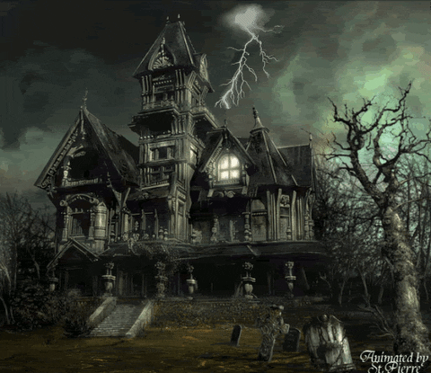

Interactive Story
Spooky House
You lost your job due to Covid, and were desperately looking for one. You come across a job offer as a property caretaker.
You are invited to the house for a visit. The house looks spooky, but intersting.

Well, I guess we enter!